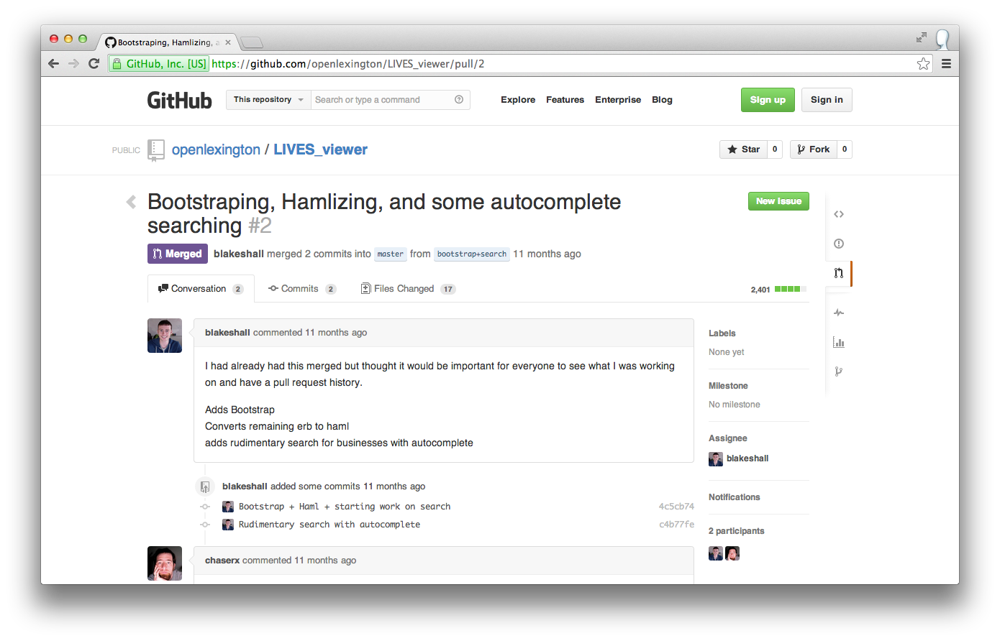
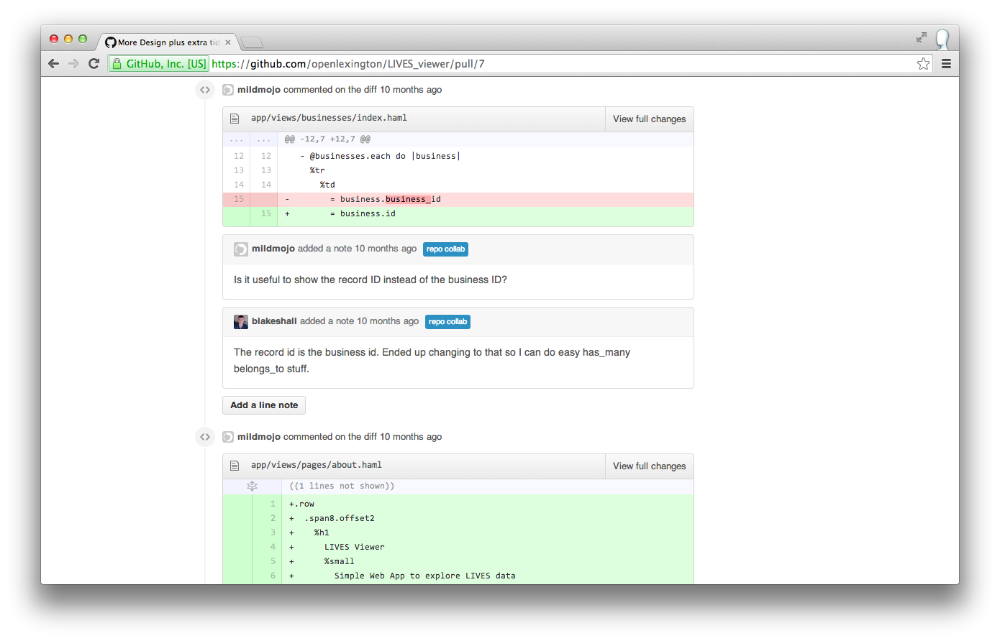

Who am I?
Blake Hall
- Student
- Web Developer
- Civic Hacker
First off: Git
Fast and lightweight distributive version control
Branching
Rebasing/Merging
Open Source Community
The old way: Email lists
Enter GitHub
Why has it gotten so popular?
- Free for public repos
- Forking
- Pull Requests
- Issues
Forking
One click and you have your own repository
Allows people to get a copy of the code, work on it, push it up, and then...
Pull Requests
Probably the biggest reason for GitHub's success
Pull Requests
Inline Comments
Issues
Tracking for issues...duh
Popular for tracking bugs, questions, and feature requests
How does this all come together?
Popular Workflow
- Find an issue for a project
- Fork the project
- Make a feature branch
- Hack
- Push to your repo
- Make a pull request on the original project repo
Other GitHub Hotness
WebHooks: Enables Continuous Integration and Continuous Deployment
Static Site Hosting: This entire slideshow is on GitHub
Stars: Follow projects you care about